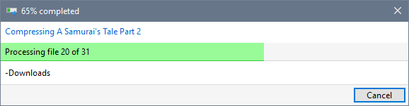
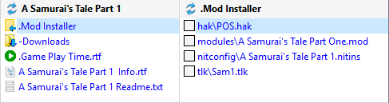
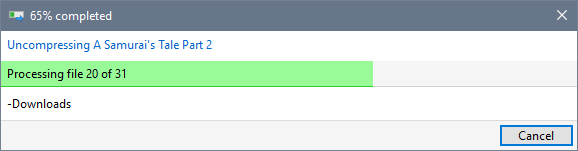
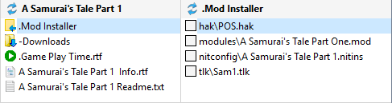

You can compress Mod folders and its contents using Windows NTFS file compression to reduce disk space usage. This is at the expense of performance (file copies and checksum calculations will take longer).
Use Compress Mod folders on the Preferences page in Advanced Settings to specify whether new Mods are compressed or not.
Use Compress Mod Folder or Uncompress Mod Folder from the Manage menu to selectively control Mod folder compression.
If you select an uncompressed Mod in the Mod List, Compress Mod Folder is shown in the Manage menu.
If you select a compressed Mod in the Mod List, Uncompress Mod Folder is shown in the Manage menu.



